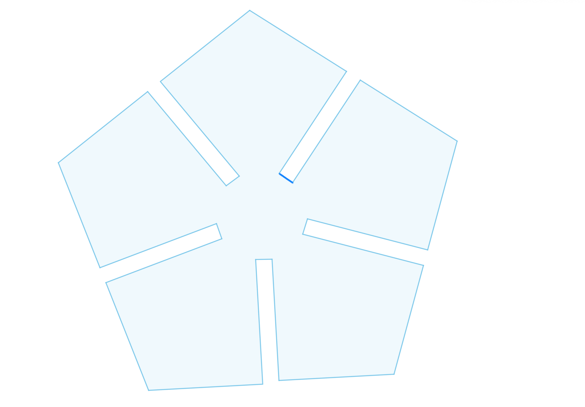
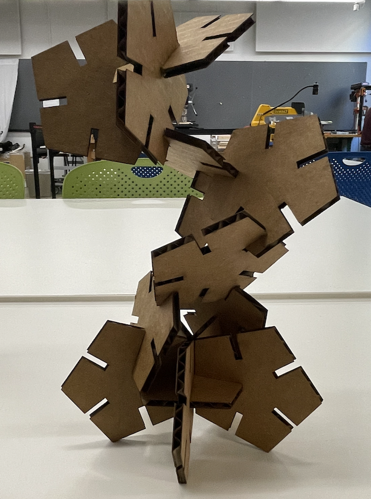

<br>
#### Week 2: Press Fit
<p1>
I wasnted to make a press fit kit out of one of my favorite shapes, which is a pentagon.
This proved to be harder than inititally anticipated as originally I didn't account for the
thickness of the material I was using
<p1>

<p1>
The image above was my first attempt at making the pentagon shape. I created it using Fusion360, but
when I first created it I made it such that the slots were 2mm in length even though my material thickness was around
4mm. Thus pentagons that I originally made did not slot together that well at all and I had to adjust the length
of the slots made.
<p1>

<p1>
I then went on to change the length to 3.9mm to account for the extra bit of material that the laser cutter takes
off with the kerf it has
<p1>